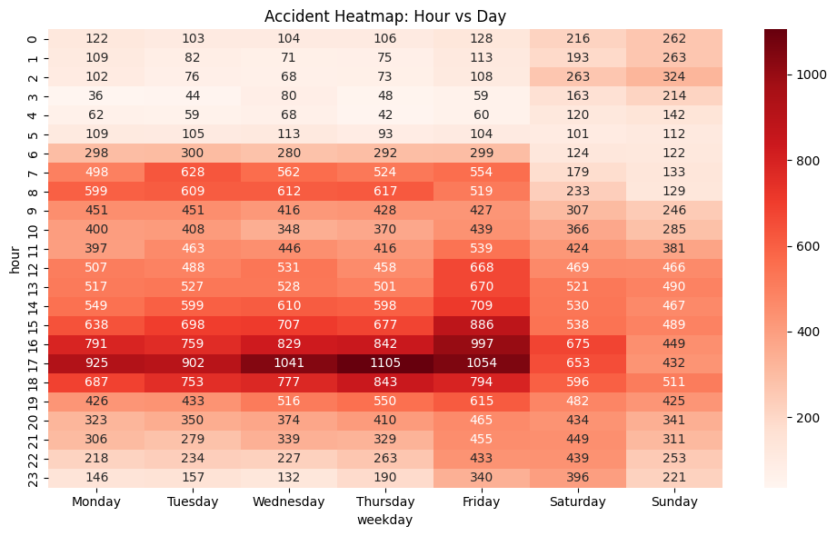
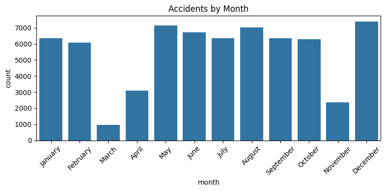
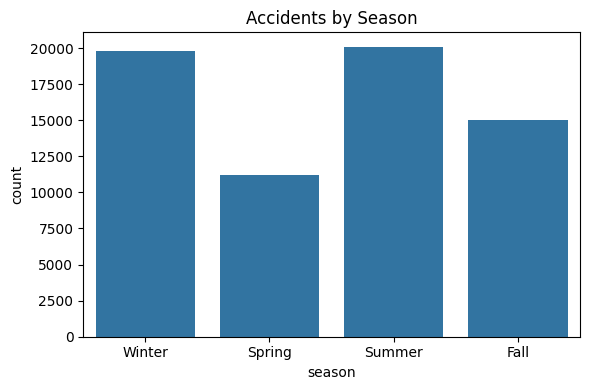
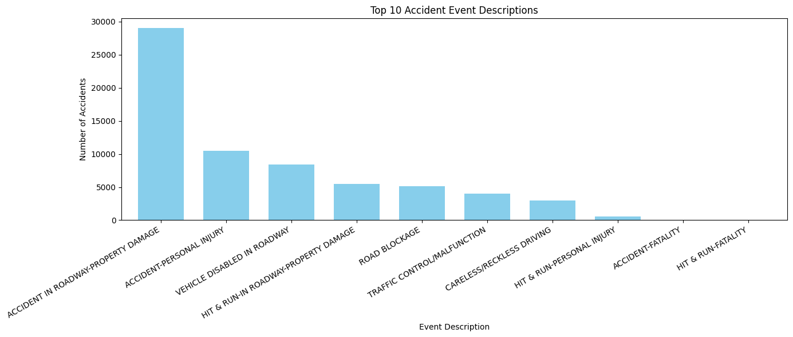

About Me
Welcome to my portfolio! I'm passionate about building web applications and sharing my projects. I love using modern technologies like Tailwind CSS and GitHub.
Projects
Referee Bias Analysis (Jupyter Project)
This project investigates whether the referee assigned to a match has a significant effect on the win/loss outcomes for FC Barcelona and Real Madrid. Explore the full analysis and visualizations below:
🚦 Accident Analysis: Charlotte, NC (2018–2019)
This project explores traffic accidents in Charlotte, NC, using data from 2018–2019. The work is presented in two parts: a public-facing portfolio post and a technical report for transparency and reproducibility.
Portfolio Post (Storytelling)
🚦 When Are Charlotte’s Roads Most Dangerous?
Every driver has felt it: the frustration of rush-hour traffic, the nervousness of driving on icy mornings, or the late-night silence of near-empty streets. But when do accidents actually happen most often — and what types of accidents are most common?
To answer this, I analyzed traffic accident data from Charlotte, NC (2018–2019), made publicly available on Kaggle. The dataset contains thousands of accident records, each with information about time, date, and event description.
- When during the week are accidents most likely?
- How do accidents vary by season and month?
- What kinds of accidents happen most often?
Accidents by Time and Day of the Week
The heatmap makes one thing clear: rush hours are the danger zones.
- Morning peaks (7–9 AM) and evening peaks (4–6 PM) dominate, especially on weekdays.
- Fridays show an especially heavy evening spike, lining up with weekend travel.
- Late nights (1–5 AM) are quieter, though not accident-free — especially on weekends.
👉 Why it matters: These trends reflect human patterns. Accidents rise when the roads are congested, when commuters are tired, or when weekend nightlife adds risk. For city officials, this highlights where traffic enforcement and safety campaigns can make the biggest impact.
Accidents by Month and Season
 The seasonal story is just as striking:
- Fall and winter see the highest accident counts. Shorter daylight hours, wet or icy roads, and holiday travel all contribute.
- December stands out with a clear bump — likely a mix of holiday traffic and winter weather hazards.
- Summer is more stable, though higher vacation travel still keeps accident counts steady.
👉 Why it matters: Seasonal awareness isn’t just trivia — it guides practical action. From salting roads in icy months to staggering police patrols during holiday weekends, this data helps the city prepare for predictable spikes in risk.
What Types of Accidents Happen Most?
Not all accidents are alike. The top 10 event descriptions reveal a few usual suspects:
- Rear-end collisions dominate, often linked to congestion or distracted driving.
- Sideswipes highlight the dangers of lane changes and crowded roads.
- Fixed-object crashes — hitting poles, barriers, or signs — show how loss of control or poor conditions can lead to severe accidents.
👉 Why it matters: Recognizing the most common types of accidents helps target prevention. Public awareness campaigns could emphasize safe following distances, while road design improvements could minimize opportunities for sideswipes.
Key Takeaways
- Timing matters: Rush hours are the riskiest.
- Season matters: Fall and winter accidents climb sharply.
- Cause matters: Rear-end collisions dominate the accident landscape.
Together, these findings remind us that accidents aren’t random. They follow predictable patterns, shaped by human behavior and the environment. By paying attention to these patterns, drivers can make safer choices, and city planners can design smarter, safer streets.
Ethical Considerations
- Fairness in resource allocation: If certain neighborhoods or communities experience higher accident rates, city officials must ensure resources (like road maintenance, traffic patrols, and safety campaigns) are distributed equitably.
- Avoiding blame: Data can point to risky times and conditions, but accidents often involve complex human and environmental factors. Overemphasizing one factor (like “bad drivers”) risks oversimplifying the issue.
- Privacy and transparency: Accident data must be anonymized and responsibly shared, so safety insights can be gained without exposing sensitive information.
👉 In short: the goal isn’t just to count accidents, but to use the data to build safer, fairer streets for everyone.
Technical Report (Process & Reflection)
🛠 Technical Report: Accident Analysis (Charlotte, NC, 2018–2019)
This technical report documents the process, data, and decisions behind the accident analysis project. It is intended for a technical audience — instructors, peers, or collaborators who may want to reproduce or extend the work.
1. Dataset Overview
- Source: Charlotte, NC Traffic Accidents 2018–2019 (Kaggle)
- Size: ~62,000 rows × ~20 columns (accidents recorded across Charlotte in 2018 and 2019)
- Key variables used:
- DateTime – timestamp of accident
- Hour – extracted from DateTime
- Day_of_Week – derived categorical (Mon–Sun)
- Season – grouped by month (Winter, Spring, Summer, Fall)
- Event_Description – textual descriptions of accident type
- Credibility: The dataset is sourced from Charlotte city records and shared on Kaggle. While comprehensive, event descriptions are not standardized and require preprocessing.
2. Data Cleaning & Preprocessing
- Datetime parsing: Converted DateTime into Hour, Day_of_Week, Month, and Season for temporal analysis.
- Handling missing values:
- Dropped rows missing critical time information (small fraction of dataset).
- Normalized accident descriptions by trimming whitespace and unifying capitalization.
- Feature engineering:
- Created Season feature based on month (Dec–Feb = Winter, Mar–May = Spring, Jun–Aug = Summer, Sep–Nov = Fall).
- Aggregated accident counts by hour, weekday, month, and season.
- Filtering: Focused analysis on the top 10 most frequent accident descriptions for clarity.
3. Visualizations
- Heatmap (Accidents by Hour vs. Day of Week)
- Rationale: Clearly highlights rush-hour peaks and weekday/weekend differences.
- Design: Used Seaborn heatmap with a gradient color palette for readability.
- Bar Chart (Accidents by Month)
- Rationale: Useful for spotting monthly spikes (holiday travel, weather).
- Design: Months ordered chronologically, x-axis labels rotated for clarity.
- Bar Chart (Accidents by Season)
- Rationale: Shows broader seasonal patterns.
- Design: Used distinct seasonal colors (blues for winter, greens for spring, etc.).
- Bar Chart (Top 10 Accident Descriptions)
- Rationale: Summarizes the most common accident types.
- Design: Horizontal bar chart to avoid clutter from long labels.
4. Reflection
- What worked well:
- The heatmap effectively revealed rush-hour peaks and weekday patterns.
- Seasonal and monthly bar charts showed clear trends.
- Grouping accident descriptions into top 10 categories reduced noise.
- Challenges:
- Event descriptions were inconsistent (e.g., “rear end,” “rear-end collision”), which required cleaning.
- Accident description bars still became crowded — grouping less frequent accidents into “Other” might improve readability.
- Daily fluctuations added noise; smoothing or rolling averages could better highlight long-term patterns.
- Future improvements:
- Integrate weather data (rain, snow, temperature) to test environmental correlations.
- Use NLP clustering for accident descriptions to unify similar categories.
- Develop an interactive dashboard (Plotly/Dash or Tableau) for dynamic exploration.
5. Ethical Considerations
- Accident data can be powerful, but it requires responsible use:
- Equity: If accident hot spots cluster in certain neighborhoods, resources (like traffic patrols or road improvements) must be distributed fairly.
- Avoiding blame: Data should be used to improve safety, not to unfairly stigmatize groups of drivers or neighborhoods.
- Privacy: Accident data must remain anonymized and aggregated to prevent identification of individuals.
6. Code Access
- Notebook: The full reproducible code, including preprocessing and visualizations, is in accident_analysis.ipynb.
- Image Export: Charts were saved to
/images/withplt.savefig()for inclusion in the storytelling portfolio post.
7. References
- Dataset: Charlotte, NC Traffic Accidents (2018–2019). Kaggle. Link
- Tools: Python 3.11, Pandas, NumPy, Matplotlib, Seaborn, Jupyter Notebook.
- Inspiration: FiveThirtyEight articles on data storytelling and visualization design.
Contact
Email: Muhamed.Ahmad530@gmail.com
GitHub: Muhamed530